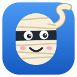

Tytuły, które mówią, co się naprawdę stało. Przeskanuj wiadomości w kilka sekund i otwórz tylko te, które Cię interesują.
Każdy artykuł ma w kodzie strony krótkie, rzeczowe streszczenie od redakcji. Rozszerzenie je odczytuje.
Zamiast zagadki widzisz zdanie z faktami. Niebieska kropka oznacza podmieniony tytuł.
Najedź na tytuł, żeby zobaczyć oryginał. Suwakiem w okienku wtyczki wyłączysz wszystko jednym ruchem.
Bez sztucznej inteligencji, bez kont i bez serwerów. Działa na interia.pl i powiązanych serwisach. WP i Onet są w planach.
bezowijania-x.y.z.zip z najnowszego wydania i rozpakuj go.chrome://extensions i włącz Tryb dewelopera (prawy górny róg).Wersja w Chrome Web Store jest w przygotowaniu.